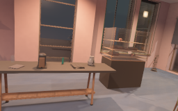
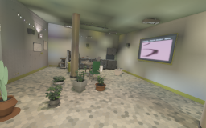
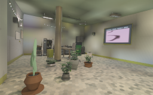

reference
Co-visibility legend: camera 0 camera 1
Scene seed 0




Scene seed 1




Measured distributions
{
"baseline_m": {
"count": 8,
"max": 1.5043840408325195,
"mean": 1.3656549751758575,
"min": 1.2295076847076416,
"p05_p25_p50_p75_p95": [
1.2295076847076416,
1.237944722175598,
1.490783452987671,
1.490783452987671,
1.5043840408325195
]
},
"overlap": {
"count": 8,
"max": 0.85810546875,
"mean": 0.6850830078125,
"min": 0.39814453125,
"p05_p25_p50_p75_p95": [
0.39814453125,
0.681689453125,
0.74716796875,
0.79248046875,
0.85810546875
]
},
"reprojection_p99_pixels": {
"count": 8,
"max": 0.00007667446,
"mean": 0.00004980902999999999,
"min": 0.000038146973,
"p05_p25_p50_p75_p95": [
0.000038146973,
0.000041085546,
0.000043158372,
0.000051179533,
0.00007667446
]
},
"triangulation_degrees": {
"count": 8,
"max": 18.211947809479913,
"mean": 14.846962903757744,
"min": 12.190260370967405,
"p05_p25_p50_p75_p95": [
12.190260370967405,
13.081692481169975,
16.261965254166473,
16.683796063873455,
18.211947809479913
]
}
}